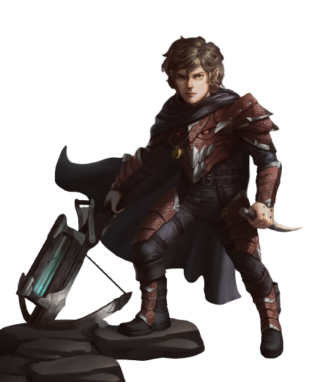

Alguns passos dentro do caminho escuro, Bylim encontra um Ent, criatura muito agradável que oferece levá-lo no topo de suas folhas até a saída. Ele encontra uma caverna negra e sombria protegida por um golem incontrolável que destrói tudo ao seu redor. Bylim fica com medo e não sabe se: